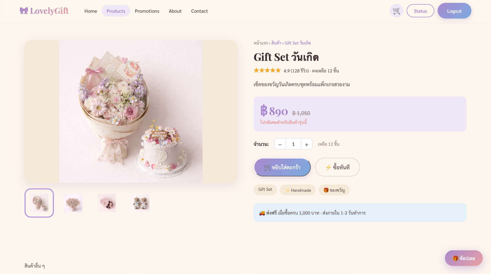
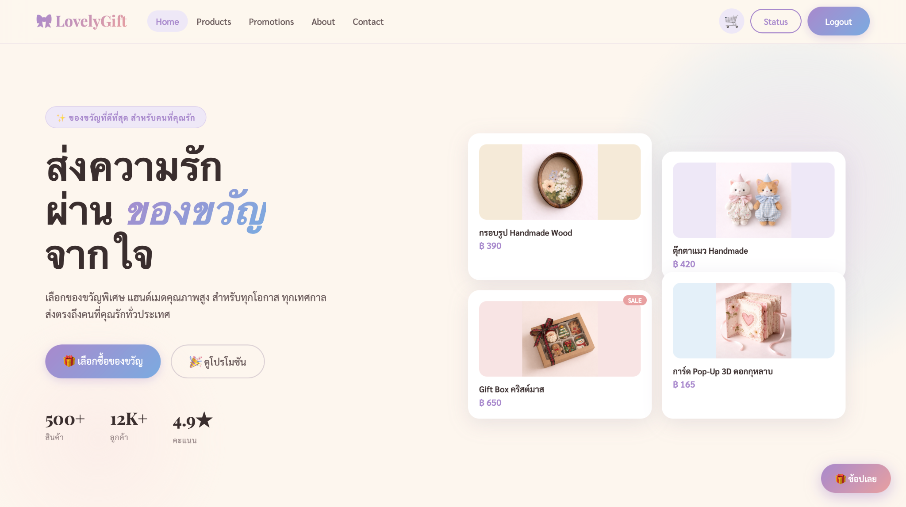
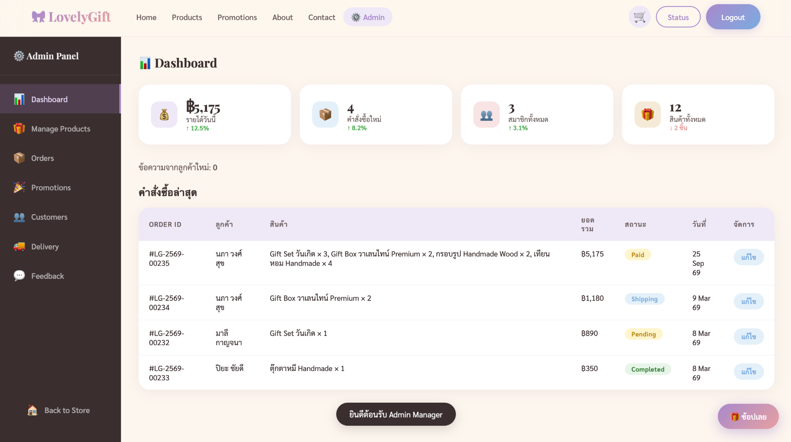
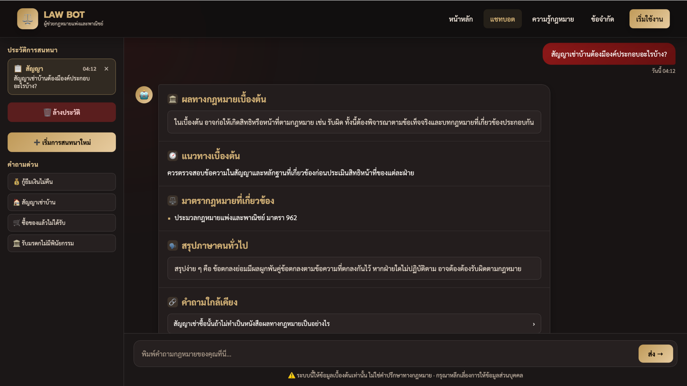
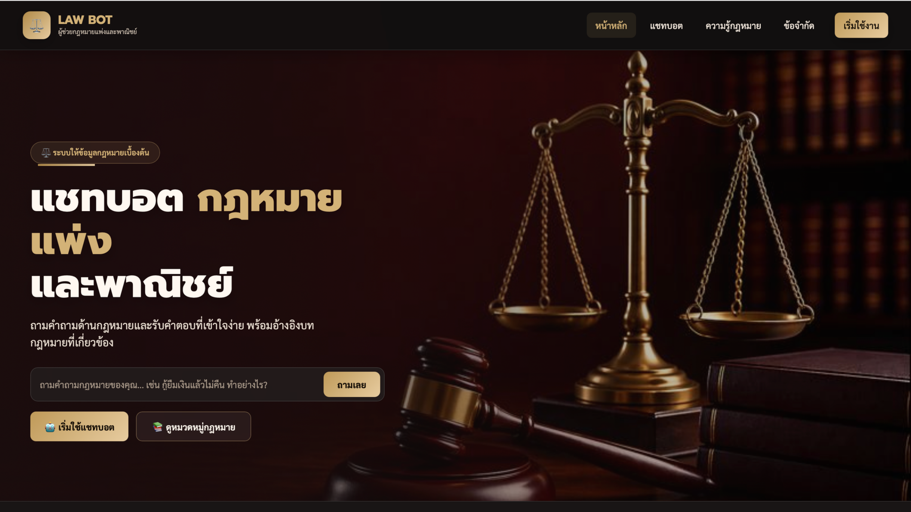
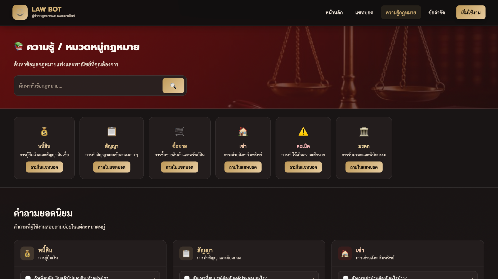
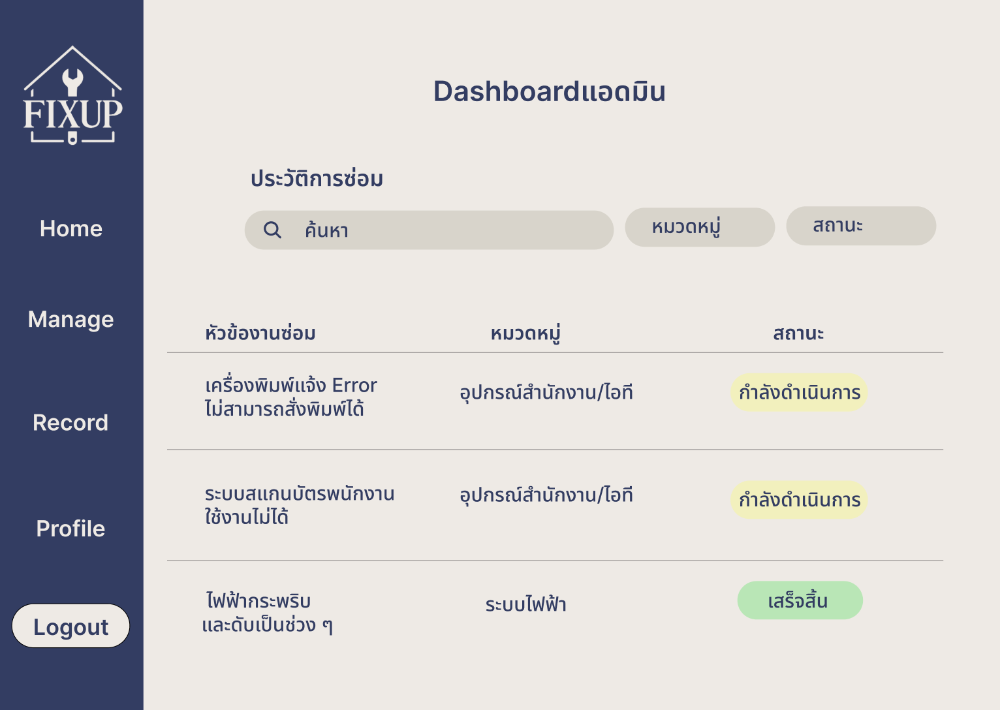
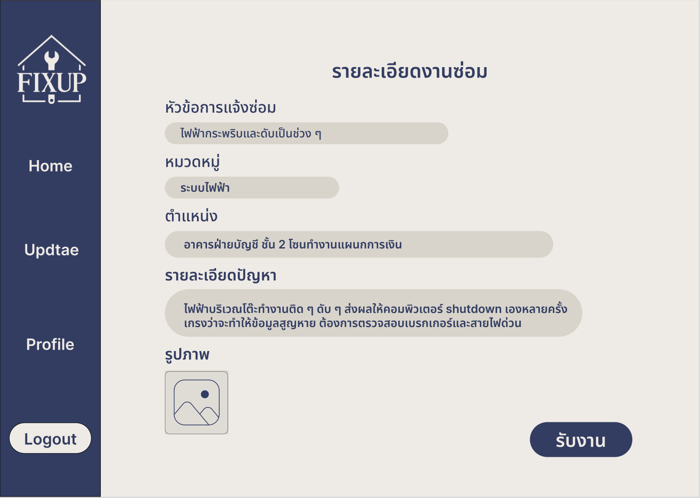
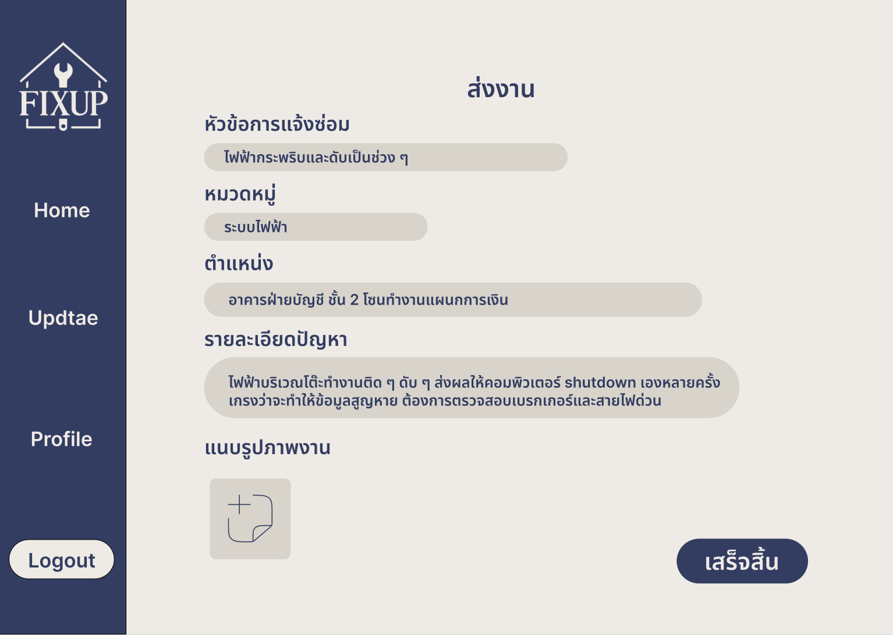

01
Front-end Development
HTMLCSSJavaScript
CO-OP PORTFOLIO • FULL STACK DEVELOPER
Full Stack Developer Co-op Student
นักศึกษาวิทยาการคอมพิวเตอร์ที่สนใจการพัฒนา Web Application แบบครบวงจร ตั้งแต่การออกแบบ Front-end การพัฒนา Back-end ไปจนถึงการจัดการฐานข้อมูล ผ่านการลงมือทำโปรเจกต์จริง
เกี่ยวกับฉัน
เป็นนักศึกษาสาขาวิทยาการคอมพิวเตอร์ที่สนใจการพัฒนา Web Application แบบ Full Stack มีประสบการณ์จากการพัฒนาโครงงานเดี่ยวและการทำงานร่วมกับทีม ตั้งแต่การวิเคราะห์ระบบ ออกแบบหน้าเว็บไซต์ พัฒนา Front-end, Back-end ไปจนถึงการเชื่อมต่อฐานข้อมูล
นอกจากนี้ ประสบการณ์ทำงานด้านบริการยังช่วยพัฒนาทักษะการสื่อสาร การประสานงาน และการแก้ไขปัญหาเฉพาะหน้า พร้อมนำความรู้และประสบการณ์มาพัฒนาต่อยอดผ่านการทำงานจริงในช่วงสหกิจศึกษา
Skills & Technologies
เทคโนโลยีและเครื่องมือที่ใช้ในการพัฒนา ออกแบบ และวิเคราะห์ระบบ
MY PROJECTS
3 โปรเจกต์ที่แสดงทักษะการพัฒนา Web Application, การเชื่อมระบบ และการออกแบบ Workflow โดยเน้นบทบาทที่ลงมือทำจริง
เว็บไซต์ร้านขายของขวัญออนไลน์



Web Application สำหรับร้านขายของขวัญออนไลน์ รองรับการทำงานทั้งฝั่งลูกค้าและผู้ดูแลระบบ ตั้งแต่เลือกสินค้า สั่งซื้อ ชำระเงิน ไปจนถึงจัดการสินค้า โปรโมชั่น สต็อก และคำสั่งซื้อ
กระบวนการขายออนไลน์มีหลายขั้นตอน ทั้งการเลือกสินค้า การสั่งซื้อ การชำระเงิน สต็อก และการจัดการหลังบ้าน จึงต้องมีระบบที่เชื่อม Workflow ให้ทำงานต่อเนื่องและตรวจสอบได้
พัฒนาเว็บไซต์ร้านของขวัญออนไลน์ พร้อมระบบลูกค้าและ Admin สำหรับจัดการสินค้า โปรโมชั่น คำสั่งซื้อ และข้อมูลที่เกี่ยวข้องกับการขาย
วิเคราะห์ Requirement และ Workflow วางโครงสร้างระบบ พัฒนาหน้าเว็บไซต์และฟังก์ชันหลัก รวมถึงเชื่อมการทำงานกับฐานข้อมูล
เข้าใจกระบวนการพัฒนา Web Application แบบครบ Workflow ตั้งแต่การวิเคราะห์ระบบ การออกแบบหน้าเว็บ การตรวจสอบข้อมูล ไปจนถึงการเชื่อมฐานข้อมูลและจัดการสถานะคำสั่งซื้อ
ระบบผู้ช่วยด้านกฎหมายด้วย RAG



Thai Legal Assistant Chatbot สำหรับช่วยค้นและสรุปข้อมูลกฎหมายจากชุดข้อมูลที่กำหนด โดยเชื่อม Front-end กับ FastAPI Backend และใช้แนวคิด Retrieval-Augmented Generation เพื่อสร้างคำตอบที่อ้างอิงบริบทจากข้อมูล
ข้อมูลกฎหมายมีรายละเอียดมากและใช้ภาษาที่เข้าใจยาก ผู้ใช้ทั่วไปจึงอาจค้นหาข้อมูลที่เกี่ยวข้องกับคำถามของตนเองได้ไม่สะดวก
พัฒนา Chatbot ที่รับคำถามจากผู้ใช้ ค้นข้อมูลที่เกี่ยวข้องจาก Dataset ส่งผ่าน RAG Pipeline และแสดงคำตอบพร้อมสรุปภาษาที่อ่านเข้าใจง่ายขึ้น
วิเคราะห์โครงสร้าง Chatbot ออกแบบ Workflow การถาม–ตอบ พัฒนาและทดสอบระบบค้นหาคำตอบ รวมถึงออกแบบการนำเสนอผลลัพธ์ให้เหมาะกับผู้ใช้งาน
เรียนรู้การเชื่อม Front-end, Backend และ RAG เข้าด้วยกัน รวมถึงการออกแบบคำตอบสำหรับข้อมูลที่ต้องสื่อสารอย่างระมัดระวัง เช่น การแสดง Disclaimer และสรุปภาษาคนทั่วไป
ระบบแจ้งซ่อมและติดตามสถานะงาน



ระบบบริหารจัดการงานแจ้งซ่อมสำหรับผู้ใช้งาน ช่าง และผู้ดูแลระบบ ช่วยรวบรวมคำขอซ่อมไว้ในระบบเดียวและติดตามสถานะงานตั้งแต่แจ้งปัญหาจนถึงการดำเนินงานของช่าง
การแจ้งซ่อมผ่านช่องทางที่กระจัดกระจายทำให้ติดตามงานยาก ข้อมูลอาจตกหล่น และผู้แจ้งไม่เห็นสถานะการดำเนินงานที่ชัดเจน
พัฒนาระบบแจ้งซ่อมที่มีหน้า Dashboard การจัดการคำขอซ่อม การติดตามสถานะ และการเชื่อมข้อมูลระหว่าง Front-end, API และฐานข้อมูล
วิเคราะห์ความต้องการและ Workflow ของผู้ใช้แต่ละบทบาท ออกแบบหน้าจอและโครงสร้างระบบ รวมถึงพัฒนาการเชื่อมต่อ API และฐานข้อมูล
เข้าใจการออกแบบระบบที่มีหลายบทบาท การจัดการสถานะงาน และการเชื่อม React Front-end กับ REST API และฐานข้อมูลให้ทำงานเป็น Workflow เดียวกัน
ประสบการณ์การทำงาน
พนักงานต้อนรับ / เจ้าหน้าที่สนับสนุนงานธุรการ
พนักงานบริการ / บาริสต้า
แคชเชียร์ / พนักงานบริการ
แคชเชียร์ / บาริสต้า / พนักงานบริการ
ติดต่อ
หากต้องการติดต่อเพื่อสอบถามข้อมูลเพิ่มเติม นัดหมายสัมภาษณ์ หรือพูดคุยเกี่ยวกับโอกาสการฝึกประสบการณ์ สามารถติดต่อได้ผ่านช่องทางด้านล่างค่ะ
สแกน QR Code เพื่อพูดคุย สอบถามข้อมูลเพิ่มเติม หรือนัดหมายสัมภาษณ์ได้ค่ะ